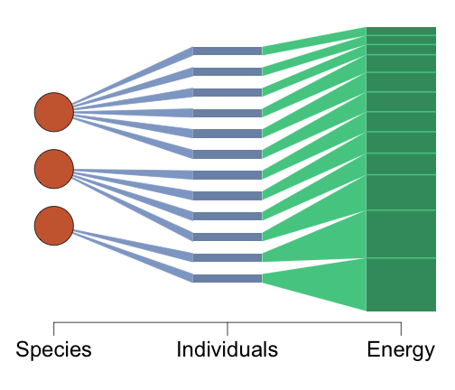
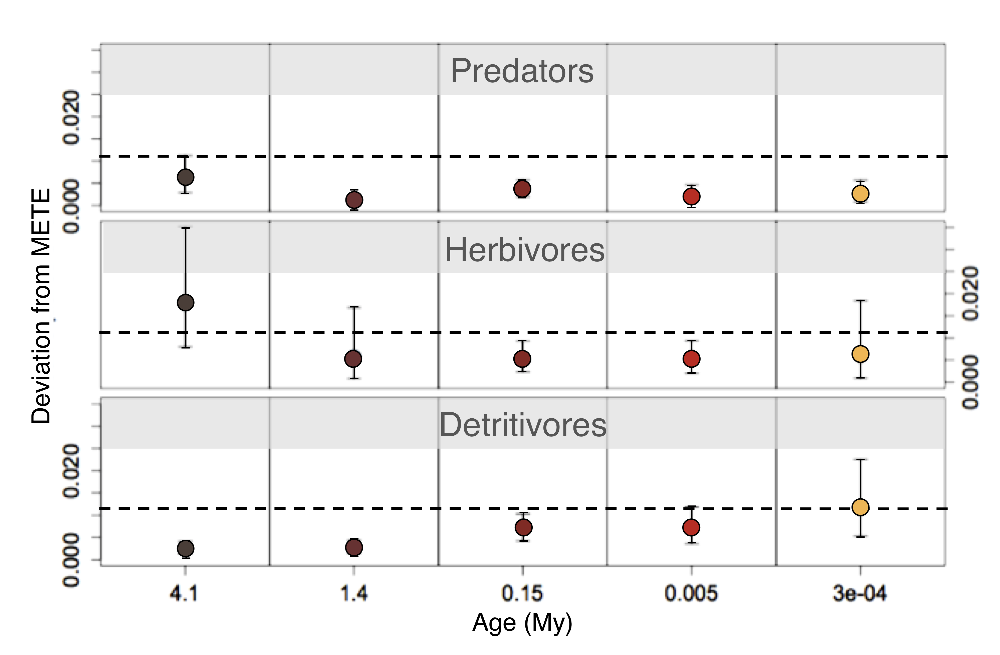
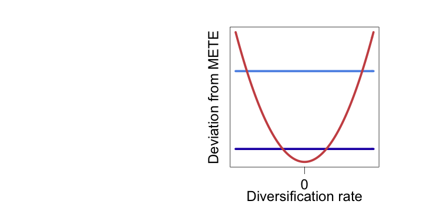
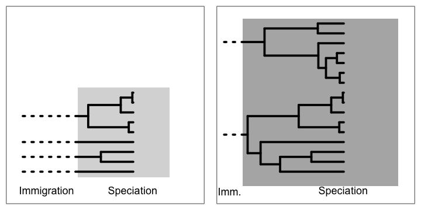
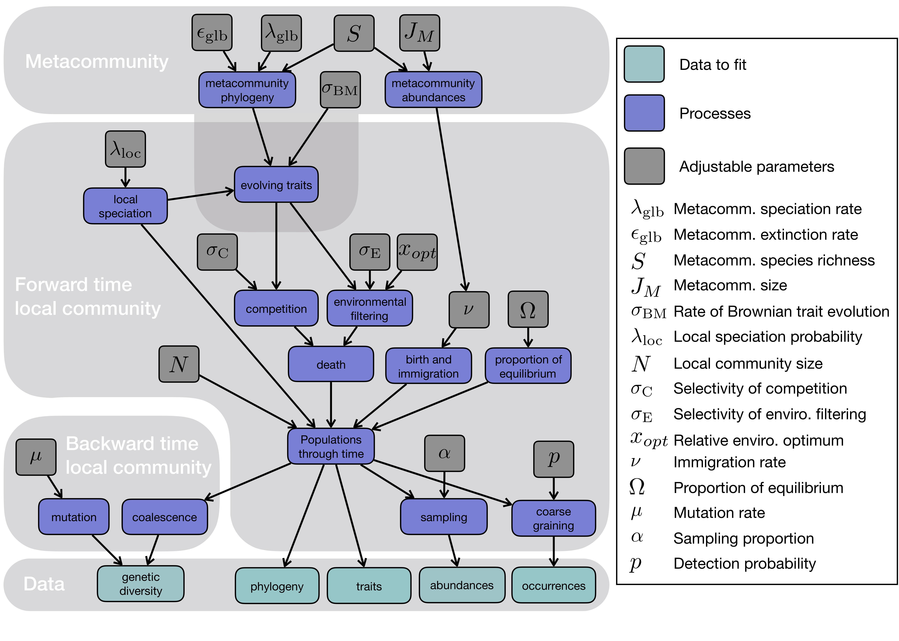
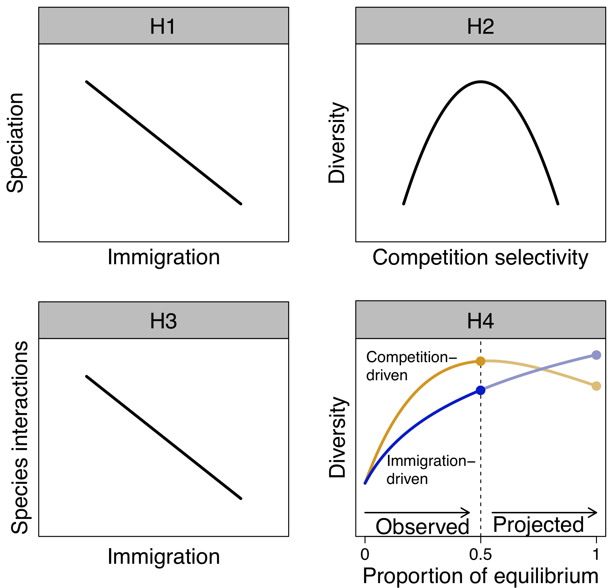
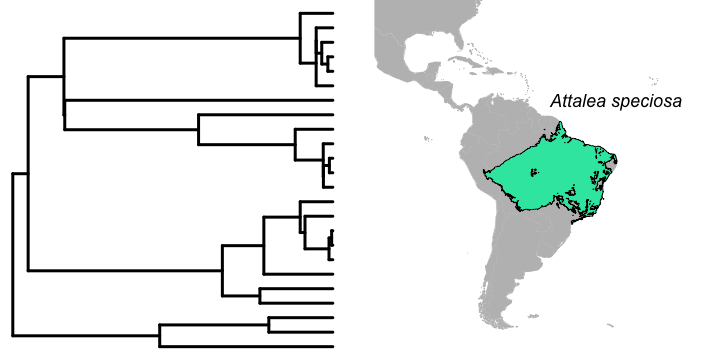
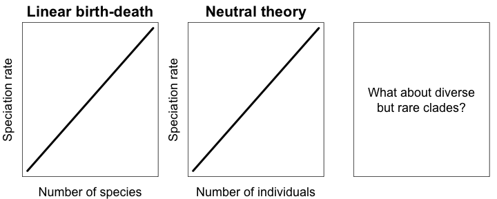

Your browser doesn't support the features required by impress.js, so you are
presented with a simplified version of this presentation.
For the best experience please use the latest Chrome, Safari or Firefox
browser.
Three Tree-of-Life-Inspired Approaches to Tropical Hyperdiversity
Andy Rominger
Why are tropical rainforests so diverse?
Are their dynamics transient or equilibrial?
Is their equilibrium diversity higher?
Is their diversity maintained above equilibrium?
Are other areas below equilibrium?
Are ecological interactions stronger?
Is diversification in tropical rainforest unique?
Approach 1:
Quantifying equilibrium with the Maximum Entropy Theory of Ecology
The Maximum Entropy Theory of Ecology (METE) provides a prediction for an assemblage in statistical steady state.

It does so by seeking the least biased way of allocating metabolism to individuals and individuals to species.
Harte (2011) Oxford University Press; Rominger & Merow (2017) Methods in Ecology and Evolution
The Maximum Entropy Theory of Ecology (METE) provides a prediction for an assemblage in statistical steady state.

It predicts many macroecological metrics of inerest.
Harte (2011) Oxford University Press; Rominger & Merow (2017) Methods in Ecology and Evolution
Case Study: Across the Hawaiian chronosequence, METE reveals unique deviations from equilibrium in different arthropod guilds

For all availible TRF plot data, compare METE predictions to observed, and then...
Evaluate if deviations from METE correlate with diversity or inferred diversification
Local systems in equilibrium, no bearing on diversity
Local systems not in equilibrium, no bearing on diversity
Deviations from equilibrium linked to less diversity
Deviations from equilibrium linked to greater diversity
Evaluate if deviations from METE correlate with diversity or inferred diversification

Local systems in equilibrium, no bearing on diversification
Local systems not in equilibrium, no bearing on diversification
Deviations from equilibrium linked to higher rates (+ and -)
Evaluate if deviations from METE correlate with diversity or inferred diversification
 In combination these perspectives reveal effects of processes across timescales on equilibrium, transience, and diversity.
In combination these perspectives reveal effects of processes across timescales on equilibrium, transience, and diversity.
Use DAISIE model to estimate diversification

The model was designed for islands, but we could use it across scales on continents in combination with ancestral area reconstructions (e.g. BayArea)
Valente, et al. (2015) Ecology Letters; Landis, et al. (2013) Systematic Biology
Evaluate if deviations from METE correlate with ecosystem "age" or "stability"

Estimate "age" or "stability" with species distribution models and phylogeography

Approach 2:
Quantifying process with the Massive Eco-evolutionary Synthesis Simulation
What a MESS! (Massive Eco-evolution Synthesis Simulation)

Resonates with "Plant phylogeny as a window on the evolution of hyperdiversity in the tropical rainforest biome"

Parameter inference with MESS

Hypothesis testing with MESS
 Evaluate consequence of stability on eco-evo equilibrium
Evaluate consequence of stability on eco-evo equilibrium
Hypothesis testing with MESS

Approach 3: Is diversification in the TFR Biome different?
Combining phylogenies and range maps, let's ask if clade occupancy in the TFR is relevant to diversification, via...

Comparing structure of "community phylogenies" from pixels in TRF and non-TFR regions

Comparing range through time patterns of "community phylogenies" from pixels in TRF and non-TFR regions

Competing explicit state-dependent diversification models with and without TRF effects

SecSSE models have been shown to be robust to Type I error
Herrera-Alsina, et al. (2018) Systematic Biology
Hyperdiverse ecosystems are tied to hyperdominance
But exisiting diversification models are silent or ignorant about abundance

The link between rarity and diversification is not well known; understanding it could help explain hyperdiversity